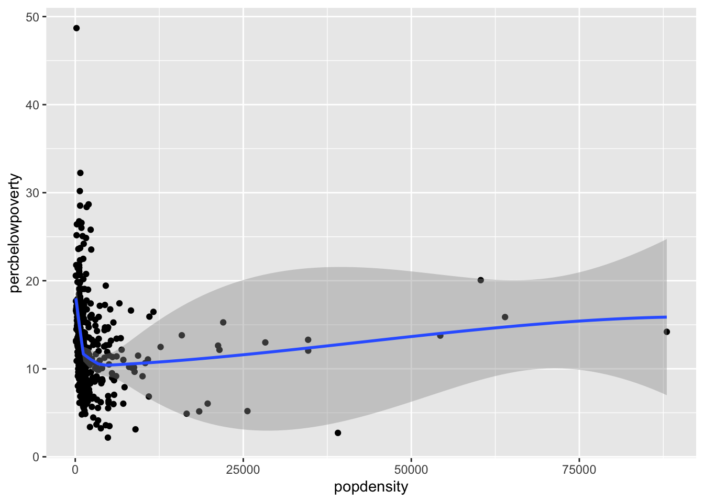
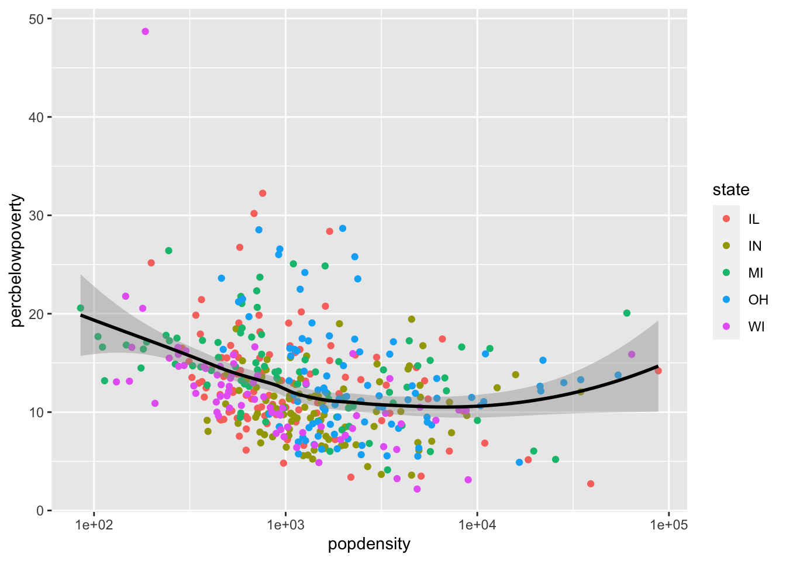

# Downloading packages -------------------------------------------------------
- Downloading nycflights13 from CRAN ... OK [4.3 Mb in 0.11s]
Successfully downloaded 1 package in 0.91 seconds.
The following package(s) will be installed:
- nycflights13 [1.0.2]
These packages will be installed into "~/work/hpam7660-sp24/hpam7660-sp24/renv/library/R-4.3/x86_64-pc-linux-gnu".
# Installing packages --------------------------------------------------------
- Installing nycflights13 ... OK [built from source and cached in 9.2s]
Successfully installed 1 package in 9.2 seconds.
# Downloading packages -------------------------------------------------------
- Downloading gapminder from CRAN ... OK [2.1 Mb]
Successfully downloaded 1 package in 0.33 seconds.
The following package(s) will be installed:
- gapminder [1.0.0]
These packages will be installed into "~/work/hpam7660-sp24/hpam7660-sp24/renv/library/R-4.3/x86_64-pc-linux-gnu".
# Installing packages --------------------------------------------------------
- Installing gapminder ... OK [built from source and cached in 2.1s]
Successfully installed 1 package in 2.2 seconds.
library(gapminder)
R Basics
Creating a vector
You can create a vector using the c function:
## Any R code that begins with the # character is a comment## Comments are ignored by Rmy_numbers <-c(4, 8, 15, 16, 23, 42) # Anything after # is also a# commentmy_numbers
[1] 4 8 15 16 23 42
Installing and loading a package
You can install a package with the install.packages function, passing the name of the package to be installed as a string (that is, in quotes):
install.packages("ggplot2")
You can load a package into the R environment by calling library() with the name of package without quotes. You should only have one package per library call.
library(ggplot2)
Calling functions from specific packages
We can also use the mypackage:: prefix to access package functions without loading:
knitr::kable(head(mtcars))
mpg
cyl
disp
hp
drat
wt
qsec
vs
am
gear
carb
Mazda RX4
21.0
6
160
110
3.90
2.620
16.46
0
1
4
4
Mazda RX4 Wag
21.0
6
160
110
3.90
2.875
17.02
0
1
4
4
Datsun 710
22.8
4
108
93
3.85
2.320
18.61
1
1
4
1
Hornet 4 Drive
21.4
6
258
110
3.08
3.215
19.44
1
0
3
1
Hornet Sportabout
18.7
8
360
175
3.15
3.440
17.02
0
0
3
2
Valiant
18.1
6
225
105
2.76
3.460
20.22
1
0
3
1
Data Visualization
Scatter plot
You can produce a scatter plot with using the x and y aesthetics along with the geom_point() function.
You can add a smoothed curve that summarizes the relationship between two variables with the geom_smooth() function. By default, it uses a loess smoother to estimated the conditional mean of the y-axis variable as a function of the x-axis variable.
`geom_smooth()` using method = 'loess' and formula = 'y ~ x'

Adding a regression line
geom_smooth can also add a regression line by setting the argument method = "lm" and we can turn off the shaded regions around the line with se = FALSE
Use the labs() to add informative labels to the plot:
ggplot(data = midwest,mapping =aes(x = popdensity,y = percbelowpoverty)) +geom_point() +geom_smooth(method ="loess", se =FALSE) +scale_x_log10() +labs(x ="Population Density",y ="Percent of County Below Poverty Line",title ="Poverty and Population Density",subtitle ="Among Counties in the Midwest",source ="US Census, 2000")
`geom_smooth()` using formula = 'y ~ x'
Mapping aesthetics to variables
If you would like to map an aesthetic to a variable for all geoms in the plot, you can put it in the aes call in the ggplot() function:
`geom_smooth()` using method = 'loess' and formula = 'y ~ x'

Setting the aesthetics for all observations
If you would like to set the color or size or shape of a geom for all data points (that is, not mapped to any variables), be sure to set these outside of aes():
`stat_bin()` using `bins = 30`. Pick better value with `binwidth`.
Data Wrangling
Subsetting a data frame
Use the filter() function from the dplyr package to subset a data frame. In this example, you’ll use the nycflights13 data and filter by United Airlines flights.
Here the 1:5 syntax tells R to produce a vector that starts at 1 and ends at 5, incrementing by 1:
1:5
[1] 1 2 3 4 5
Filtering to the largest/smallest values of a variable
To subset to the rows that have the largest or smallest values of a given variable, use the slice_max and slice_max functions. For the largest values, use slice_max and use the n argument to specify how many rows you want:
This code finds all variables with column names that end with the string “delay”. See the help page for select() for more information on different ways to select.
Renaming a variable
You can rename a variable useing the function rename(new_name = old_name):
If you want to create a new variable that can take on two values based on a logical conditional, you should use the if_else() function inside of mutate(). For instance, if we want to create a more nicely labeled version of the sinclair2017 variable (which is 0/1), we could do:
flights |>mutate(late =if_else(arr_delay >0,"Flight Delayed","Flight On Time")) |>select(arr_delay, late)
# A tibble: 336,776 × 2
arr_delay late
<dbl> <chr>
1 11 Flight Delayed
2 20 Flight Delayed
3 33 Flight Delayed
4 -18 Flight On Time
5 -25 Flight On Time
6 12 Flight Delayed
7 19 Flight Delayed
8 -14 Flight On Time
9 -8 Flight On Time
10 8 Flight Delayed
# ℹ 336,766 more rows
Summarizing a variable
You can calculate summaries of variables in the data set using the summarize() function.
# A tibble: 1 × 3
avg_dep_time sd_dep_time median_dep_time
<dbl> <dbl> <int>
1 NA NA NA
Summarizing variables by groups of rows
By default, summarize() calculates the summaries of variables for all rows in the data frame. You can also calculate these summaries within groups of rows defined by another variable in the data frame using the group_by() function before summarizing.
# A tibble: 16 × 4
carrier avg_dep_time sd_dep_time median_dep_time
<chr> <dbl> <dbl> <dbl>
1 9E NA NA NA
2 AA NA NA NA
3 AS NA NA NA
4 B6 NA NA NA
5 DL NA NA NA
6 EV NA NA NA
7 F9 NA NA NA
8 FL NA NA NA
9 HA 949. 53.6 954
10 MQ NA NA NA
11 OO NA NA NA
12 UA NA NA NA
13 US NA NA NA
14 VX NA NA NA
15 WN NA NA NA
16 YV NA NA NA
Here, the summarize() function breaks apart the original data into smaller data frames for each carrier and applies the summary functions to those, then combines everything into one tibble.
Summarizing by multiple variables
You can group by multiple variables and summarize() will create groups based on every combination of each variable:
`summarise()` has grouped output by 'carrier'. You can override using the
`.groups` argument.
# A tibble: 185 × 3
# Groups: carrier [16]
carrier month avg_dep_time
<chr> <int> <dbl>
1 9E 1 NA
2 9E 2 NA
3 9E 3 NA
4 9E 4 NA
5 9E 5 NA
6 9E 6 NA
7 9E 7 NA
8 9E 8 NA
9 9E 9 NA
10 9E 10 NA
# ℹ 175 more rows
You’ll notice the message that summarize() sends after using to let us know that resulting tibble is grouped by carrier. By default, summarize() drops the last group you provided in group_by (month in this case). This isn’t an error message, it’s just letting us know some helpful information. If you want to avoid this messaging displaying, you need to specify what grouping you want after using the .groups argument:
# A tibble: 185 × 3
# Groups: carrier [16]
carrier month avg_dep_time
<chr> <int> <dbl>
1 9E 1 NA
2 9E 2 NA
3 9E 3 NA
4 9E 4 NA
5 9E 5 NA
6 9E 6 NA
7 9E 7 NA
8 9E 8 NA
9 9E 9 NA
10 9E 10 NA
# ℹ 175 more rows
Summarizing across many variables
If you want to apply the same summary to multiple variables, you can use the across(vars, fun) function, where vars is a vector of variable names (specified like with select()) and fun is a summary function to apply to those variables.
`summarise()` has grouped output by 'carrier'. You can override using the
`.groups` argument.
# A tibble: 185 × 4
# Groups: carrier [16]
carrier month dep_time dep_delay
<chr> <int> <dbl> <dbl>
1 9E 1 NA NA
2 9E 2 NA NA
3 9E 3 NA NA
4 9E 4 NA NA
5 9E 5 NA NA
6 9E 6 NA NA
7 9E 7 NA NA
8 9E 8 NA NA
9 9E 9 NA NA
10 9E 10 NA NA
# ℹ 175 more rows
As with select(), you can use the : operator to select a range of variables
`summarise()` has grouped output by 'carrier'. You can override using the
`.groups` argument.
# A tibble: 185 × 8
# Groups: carrier [16]
carrier month dep_time sched_dep_time dep_delay arr_time sched_arr_time
<chr> <int> <dbl> <dbl> <dbl> <dbl> <dbl>
1 9E 1 NA 1485. NA NA 1676.
2 9E 2 NA 1471. NA NA 1661.
3 9E 3 NA 1472. NA NA 1664.
4 9E 4 NA 1502. NA NA 1697.
5 9E 5 NA 1509. NA NA 1712.
6 9E 6 NA 1512. NA NA 1718.
7 9E 7 NA 1493. NA NA 1702.
8 9E 8 NA 1497. NA NA 1706.
9 9E 9 NA 1458. NA NA 1658.
10 9E 10 NA 1432. NA NA 1632.
# ℹ 175 more rows
# ℹ 1 more variable: arr_delay <dbl>
Table of counts of a categorical variable
There are two way to produce a table of counts of each category of a variable. The first is to use group_by and summarize along with the summary function n(), which returns the numbers of rows in each grouping (that is, each combination of the grouping variables):
flights |>group_by(carrier) |>summarize(n =n())
# A tibble: 16 × 2
carrier n
<chr> <int>
1 9E 18460
2 AA 32729
3 AS 714
4 B6 54635
5 DL 48110
6 EV 54173
7 F9 685
8 FL 3260
9 HA 342
10 MQ 26397
11 OO 32
12 UA 58665
13 US 20536
14 VX 5162
15 WN 12275
16 YV 601
A simpler way to acheive the same outcome is to use the count() function, which implements these two steps:
flights |>count(carrier)
# A tibble: 16 × 2
carrier n
<chr> <int>
1 9E 18460
2 AA 32729
3 AS 714
4 B6 54635
5 DL 48110
6 EV 54173
7 F9 685
8 FL 3260
9 HA 342
10 MQ 26397
11 OO 32
12 UA 58665
13 US 20536
14 VX 5162
15 WN 12275
16 YV 601
Producing nicely formatted tables with kable()
You can take any tibble in R and convert it into a more readable output by passing it to knitr::kable(). In our homework, generally, we will save the tibble as an object and then pass it to this function.
You can add informative column names to the table using the col.names argument.
knitr::kable( month_summary,col.names =c("Month", "Average Delay", "SD of Delay"))
Month
Average Delay
SD of Delay
1
NA
NA
2
NA
NA
3
NA
NA
4
NA
NA
5
NA
NA
6
NA
NA
7
NA
NA
8
NA
NA
9
NA
NA
10
NA
NA
11
NA
NA
12
NA
NA
Finally, we can round the numbers in the table to be a bit nicer using the digits argument. This will tell kable() how many significant digits to show.
knitr::kable( month_summary,col.names =c("Month", "Average Delay", "SD of Delay"),digits =3)
Month
Average Delay
SD of Delay
1
NA
NA
2
NA
NA
3
NA
NA
4
NA
NA
5
NA
NA
6
NA
NA
7
NA
NA
8
NA
NA
9
NA
NA
10
NA
NA
11
NA
NA
12
NA
NA
Barplots of counts
You can visualize counts of a variable using a barplot:
We can use barplots to visualize other grouped summaries like means, but we need to use the geom_col() geom instead and specify the variable you want to be the height of the bars. We also want to filter our data so that only values of arr_delay that are greater than zero are considered.
Often we want to sort the barplot axes to be in the order of the variable of interest so we can quickly compare them. We can use the fct_reorder(group_var, ordering_var) function to do this where the group_var is the grouping variable that is going on the axes and the ordering_var is the variable that we will sort the groups on.
The .keep = "used" argument here tells mutate to only return the variables created and any variables used to create them. We’re using it here for display purposes.
You can filter based on these logical variables. In particular, if we want to subset to rows where both late and fall were TRUE we could do the following filter:
Any time you place the exclamation point in front of a logical, it will turn any TRUE into a FALSE and vice versa. For instance, if we wanted on-time flights in the fall, we could used
Once you group a tibble, you can summarize logicals within groups using two commands. any() will return TRUE if a logical is TRUE for any row in a group and FALSE otherwise. all() will return TRUE when the logical inside it is TRUE for all rows in a group and FALSE otherwise.